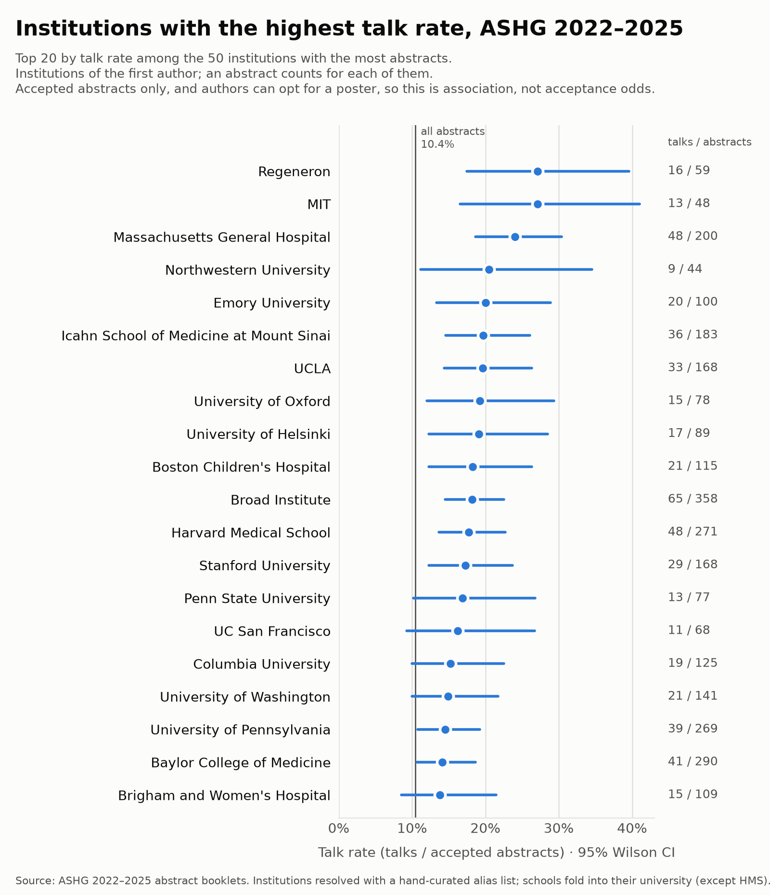
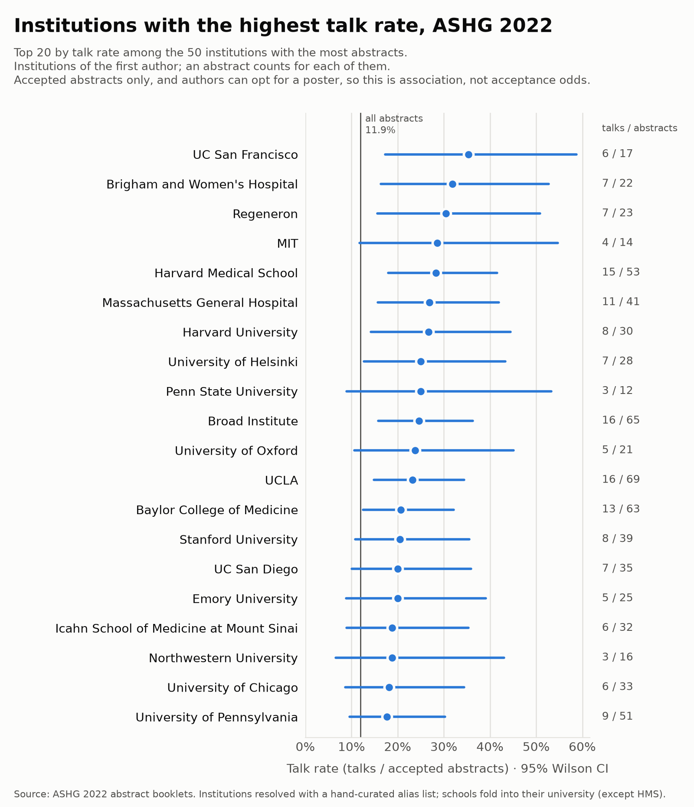
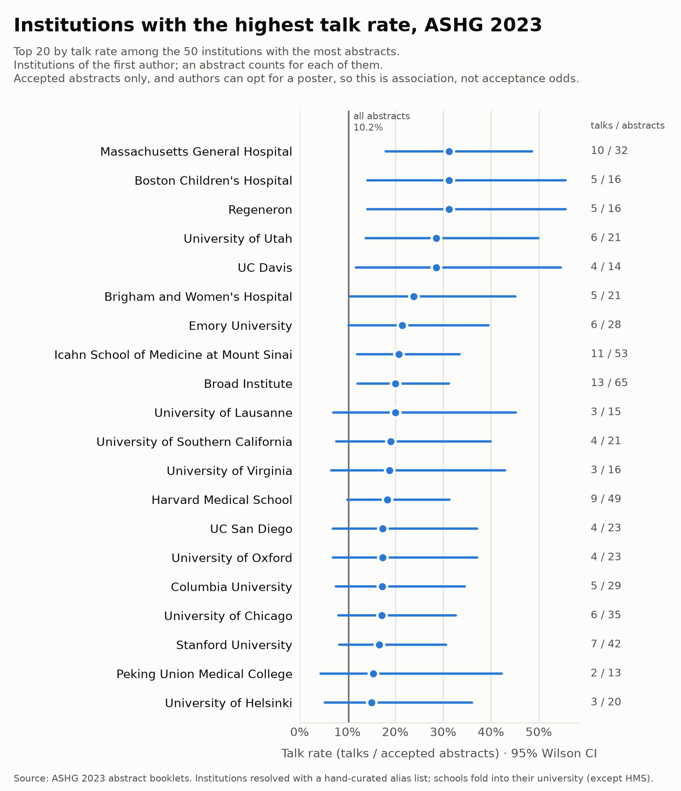
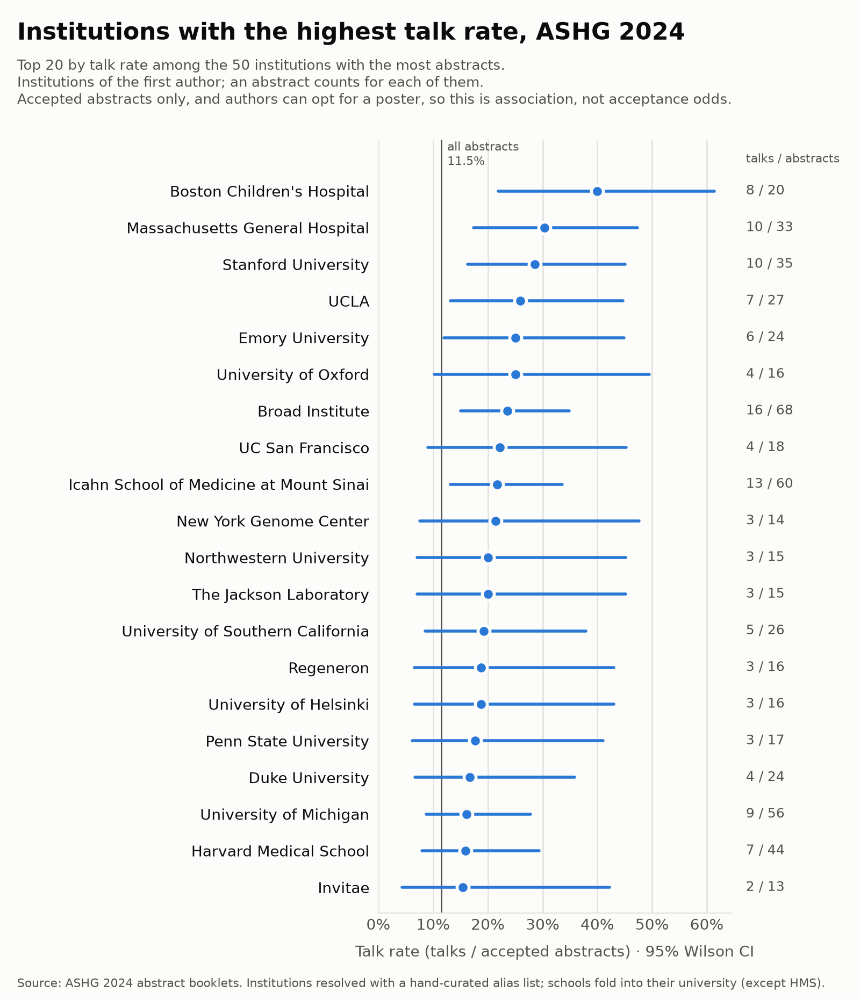
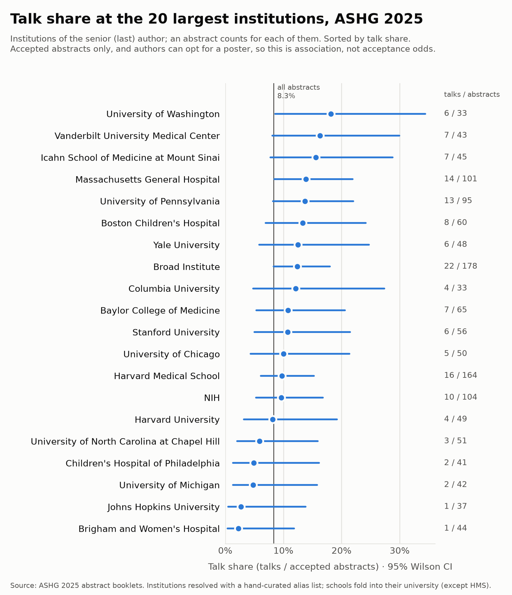
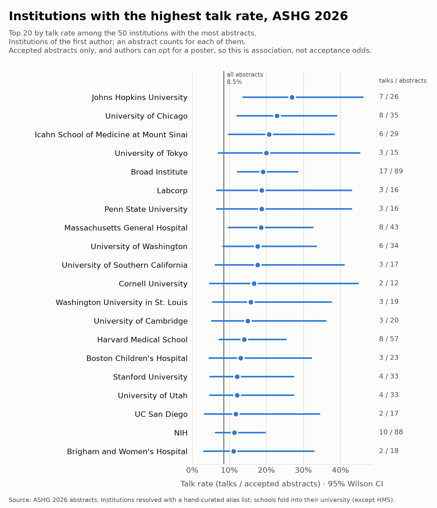

Institutions
Talk rate at the institutions with the most abstracts.
Credit goes to every institution of the first author. An abstract can count for several institutions, so rows don't sum to the total. Institutions are resolved with a hand-curated list of 213 institutions, which places about 63% of abstracts. The figure shows the 20 highest talk rates among the 50 institutions with the most abstracts; the tables list all 50, except any without a talk.
All years · 2022–2026
Pooled counts over every meeting, compared with the pooled talk rate of 10.1%.


By first author
| Institution | Abstracts | Talks | Talk rate | 95% CI |
|---|---|---|---|---|
| NIH | 563 | 58 | 10.3% | 8.1%–13.1% |
| Broad Institute | 447 | 82 | 18.3% | 15.0%–22.2% |
| Baylor College of Medicine | 335 | 44 | 13.1% | 9.9%–17.2% |
| Harvard Medical School | 328 | 56 | 17.1% | 13.4%–21.5% |
| University of Pennsylvania | 311 | 43 | 13.8% | 10.4%–18.1% |
| University of Michigan | 251 | 32 | 12.8% | 9.2%–17.4% |
| Massachusetts General Hospital | 243 | 56 | 23.1% | 18.2%–28.7% |
| Icahn School of Medicine at Mount Sinai | 212 | 42 | 19.8% | 15.0%–25.7% |
| McGill University | 211 | 14 | 6.6% | 4.0%–10.8% |
| Johns Hopkins University | 210 | 26 | 12.4% | 8.6%–17.5% |
| Stanford University | 201 | 33 | 16.4% | 11.9%–22.2% |
| University of North Carolina at Chapel Hill | 192 | 22 | 11.5% | 7.7%–16.7% |
| University of Chicago | 190 | 28 | 14.7% | 10.4%–20.5% |
| UCLA | 187 | 35 | 18.7% | 13.8%–24.9% |
| University of Washington | 175 | 27 | 15.4% | 10.8%–21.5% |
| Yale University | 173 | 16 | 9.2% | 5.8%–14.5% |
| Children's Hospital of Philadelphia | 171 | 16 | 9.4% | 5.8%–14.7% |
| Harvard University | 159 | 20 | 12.6% | 8.3%–18.6% |
| Vanderbilt University | 154 | 15 | 9.7% | 6.0%–15.4% |
| University of Toronto | 149 | 13 | 8.7% | 5.2%–14.3% |
| Vanderbilt University Medical Center | 146 | 14 | 9.6% | 5.8%–15.4% |
| Columbia University | 144 | 20 | 13.9% | 9.2%–20.5% |
| University of Colorado | 142 | 6 | 4.2% | 2.0%–8.9% |
| Boston Children's Hospital | 138 | 24 | 17.4% | 12.0%–24.6% |
| Case Western Reserve University | 136 | 6 | 4.4% | 2.0%–9.3% |
| University of Southern California | 129 | 17 | 13.2% | 8.4%–20.1% |
| Brigham and Women's Hospital | 127 | 17 | 13.4% | 8.5%–20.4% |
| The Hospital for Sick Children | 125 | 9 | 7.2% | 3.8%–13.1% |
| University of Miami | 125 | 8 | 6.4% | 3.3%–12.1% |
| UC San Diego | 123 | 15 | 12.2% | 7.5%–19.1% |
| Emory University | 120 | 22 | 18.3% | 12.4%–26.2% |
| University of Utah | 117 | 13 | 11.1% | 6.6%–18.1% |
| University of Helsinki | 110 | 19 | 17.3% | 11.3%–25.4% |
| University of Oxford | 103 | 16 | 15.5% | 9.8%–23.8% |
| Mayo Clinic | 97 | 7 | 7.2% | 3.5%–14.1% |
| Penn State University | 93 | 16 | 17.2% | 10.9%–26.1% |
| Duke University | 93 | 11 | 11.8% | 6.7%–20.0% |
| Washington University in St. Louis | 92 | 11 | 12.0% | 6.8%–20.2% |
| Université de Montréal | 89 | 6 | 6.7% | 3.1%–13.9% |
| UC San Francisco | 86 | 12 | 14.0% | 8.2%–22.8% |
| Seoul National University | 86 | 5 | 5.8% | 2.5%–12.9% |
| University of Pittsburgh | 78 | 5 | 6.4% | 2.8%–14.1% |
| Boston University | 73 | 4 | 5.5% | 2.2%–13.3% |
| Regeneron | 68 | 17 | 25.0% | 16.2%–36.4% |
| University of Cambridge | 61 | 8 | 13.1% | 6.8%–23.8% |
| University of Minnesota | 58 | 7 | 12.1% | 6.0%–22.9% |
| UC Irvine | 57 | 8 | 14.0% | 7.3%–25.3% |
| National Taiwan University | 57 | 1 | 1.8% | 0.3%–9.3% |
| RIKEN | 55 | 7 | 12.7% | 6.3%–24.0% |
| MIT | 53 | 13 | 24.5% | 14.9%–37.6% |
ASHG 2022 · Los Angeles


By first author
| Institution | Abstracts | Talks | Talk rate | 95% CI |
|---|---|---|---|---|
| NIH | 89 | 7 | 7.9% | 3.9%–15.4% |
| University of Michigan | 71 | 11 | 15.5% | 8.9%–25.7% |
| UCLA | 69 | 16 | 23.2% | 14.8%–34.4% |
| Broad Institute | 65 | 16 | 24.6% | 15.8%–36.3% |
| Baylor College of Medicine | 63 | 13 | 20.6% | 12.5%–32.2% |
| Harvard Medical School | 53 | 15 | 28.3% | 18.0%–41.6% |
| University of Pennsylvania | 51 | 9 | 17.6% | 9.6%–30.2% |
| University of Southern California | 44 | 5 | 11.4% | 5.0%–24.0% |
| Massachusetts General Hospital | 41 | 11 | 26.8% | 15.7%–41.9% |
| Children's Hospital of Philadelphia | 41 | 5 | 12.2% | 5.3%–25.5% |
| Stanford University | 39 | 8 | 20.5% | 10.8%–35.5% |
| Johns Hopkins University | 37 | 3 | 8.1% | 2.8%–21.3% |
| Vanderbilt University | 36 | 5 | 13.9% | 6.1%–28.7% |
| UC San Diego | 35 | 7 | 20.0% | 10.0%–35.9% |
| Columbia University | 34 | 3 | 8.8% | 3.0%–23.0% |
| University of Chicago | 33 | 6 | 18.2% | 8.6%–34.4% |
| University of Miami | 33 | 3 | 9.1% | 3.1%–23.6% |
| Icahn School of Medicine at Mount Sinai | 32 | 6 | 18.8% | 8.9%–35.3% |
| McGill University | 32 | 4 | 12.5% | 5.0%–28.1% |
| Vanderbilt University Medical Center | 31 | 4 | 12.9% | 5.1%–28.8% |
| Harvard University | 30 | 8 | 26.7% | 14.2%–44.5% |
| University of Washington | 30 | 5 | 16.7% | 7.3%–33.6% |
| University of Helsinki | 28 | 7 | 25.0% | 12.7%–43.4% |
| Case Western Reserve University | 27 | 2 | 7.4% | 2.1%–23.4% |
| University of Toronto | 26 | 3 | 11.5% | 4.0%–29.0% |
| Emory University | 25 | 5 | 20.0% | 8.9%–39.1% |
| Regeneron | 23 | 7 | 30.4% | 15.6%–50.9% |
| UC Irvine | 23 | 2 | 8.7% | 2.4%–26.8% |
| Brigham and Women's Hospital | 22 | 7 | 31.8% | 16.4%–52.7% |
| Duke University | 22 | 3 | 13.6% | 4.7%–33.3% |
| University of Oxford | 21 | 5 | 23.8% | 10.6%–45.1% |
| Seoul National University | 21 | 2 | 9.5% | 2.7%–28.9% |
| University of Pittsburgh | 20 | 1 | 5.0% | 0.9%–23.6% |
| Mayo Clinic | 18 | 2 | 11.1% | 3.1%–32.8% |
| University of North Carolina at Chapel Hill | 18 | 2 | 11.1% | 3.1%–32.8% |
| The Hospital for Sick Children | 18 | 1 | 5.6% | 1.0%–25.8% |
| Yale University | 18 | 1 | 5.6% | 1.0%–25.8% |
| UC San Francisco | 17 | 6 | 35.3% | 17.3%–58.7% |
| Northwestern University | 16 | 3 | 18.8% | 6.6%–43.0% |
| Boston Children's Hospital | 15 | 1 | 6.7% | 1.2%–29.8% |
| Illumina | 15 | 1 | 6.7% | 1.2%–29.8% |
| Sidra Medicine | 15 | 1 | 6.7% | 1.2%–29.8% |
| MIT | 14 | 4 | 28.6% | 11.7%–54.6% |
| Washington University in St. Louis | 14 | 2 | 14.3% | 4.0%–39.9% |
| Boston University | 13 | 1 | 7.7% | 1.4%–33.3% |
| Penn State University | 12 | 3 | 25.0% | 8.9%–53.2% |
ASHG 2023 · Washington, DC


By first author
| Institution | Abstracts | Talks | Talk rate | 95% CI |
|---|---|---|---|---|
| NIH | 170 | 18 | 10.6% | 6.8%–16.1% |
| Baylor College of Medicine | 92 | 13 | 14.1% | 8.4%–22.7% |
| Johns Hopkins University | 79 | 10 | 12.7% | 7.0%–21.8% |
| Broad Institute | 65 | 13 | 20.0% | 12.1%–31.3% |
| University of Pennsylvania | 65 | 7 | 10.8% | 5.3%–20.6% |
| Icahn School of Medicine at Mount Sinai | 53 | 11 | 20.8% | 12.0%–33.5% |
| University of North Carolina at Chapel Hill | 50 | 7 | 14.0% | 7.0%–26.2% |
| University of Michigan | 50 | 6 | 12.0% | 5.6%–23.8% |
| Harvard Medical School | 49 | 9 | 18.4% | 10.0%–31.4% |
| UCLA | 48 | 6 | 12.5% | 5.9%–24.7% |
| Yale University | 43 | 5 | 11.6% | 5.1%–24.5% |
| Stanford University | 42 | 7 | 16.7% | 8.3%–30.6% |
| Children's Hospital of Philadelphia | 41 | 3 | 7.3% | 2.5%–19.4% |
| Harvard University | 37 | 5 | 13.5% | 5.9%–28.0% |
| University of Washington | 36 | 5 | 13.9% | 6.1%–28.7% |
| Vanderbilt University | 36 | 2 | 5.6% | 1.5%–18.1% |
| University of Chicago | 35 | 6 | 17.1% | 8.1%–32.7% |
| Case Western Reserve University | 34 | 1 | 2.9% | 0.5%–14.9% |
| Massachusetts General Hospital | 32 | 10 | 31.2% | 17.9%–48.6% |
| Columbia University | 29 | 5 | 17.2% | 7.6%–34.5% |
| Vanderbilt University Medical Center | 29 | 2 | 6.9% | 1.9%–22.0% |
| Emory University | 28 | 6 | 21.4% | 10.2%–39.5% |
| Penn State University | 28 | 4 | 14.3% | 5.7%–31.5% |
| University of Miami | 28 | 2 | 7.1% | 2.0%–22.7% |
| University of Toronto | 28 | 1 | 3.6% | 0.6%–17.7% |
| McGill University | 27 | 2 | 7.4% | 2.1%–23.4% |
| Washington University in St. Louis | 26 | 3 | 11.5% | 4.0%–29.0% |
| Duke University | 25 | 3 | 12.0% | 4.2%–30.0% |
| UC San Diego | 23 | 4 | 17.4% | 7.0%–37.1% |
| University of Oxford | 23 | 4 | 17.4% | 7.0%–37.1% |
| University of Pittsburgh | 23 | 3 | 13.0% | 4.5%–32.1% |
| The Hospital for Sick Children | 23 | 2 | 8.7% | 2.4%–26.8% |
| Mayo Clinic | 23 | 1 | 4.3% | 0.8%–21.0% |
| University of Utah | 21 | 6 | 28.6% | 13.8%–50.0% |
| Brigham and Women's Hospital | 21 | 5 | 23.8% | 10.6%–45.1% |
| University of Southern California | 21 | 4 | 19.1% | 7.7%–40.0% |
| University of Helsinki | 20 | 3 | 15.0% | 5.2%–36.0% |
| Seoul National University | 18 | 2 | 11.1% | 3.1%–32.8% |
| University College London | 17 | 2 | 11.8% | 3.3%–34.3% |
| University of Colorado | 17 | 1 | 5.9% | 1.0%–27.0% |
| Boston Children's Hospital | 16 | 5 | 31.2% | 14.2%–55.6% |
| Regeneron | 16 | 5 | 31.2% | 14.2%–55.6% |
| University of Virginia | 16 | 3 | 18.8% | 6.6%–43.0% |
| University of Lausanne | 15 | 3 | 20.0% | 7.0%–45.2% |
| UC San Francisco | 15 | 1 | 6.7% | 1.2%–29.8% |
| UC Davis | 14 | 4 | 28.6% | 11.7%–54.6% |
| Université de Montréal | 14 | 1 | 7.1% | 1.3%–31.5% |
| Peking Union Medical College | 13 | 2 | 15.4% | 4.3%–42.2% |
| QIMR Berghofer Medical Research Institute | 13 | 1 | 7.7% | 1.4%–33.3% |
ASHG 2024 · Denver


By first author
| Institution | Abstracts | Talks | Talk rate | 95% CI |
|---|---|---|---|---|
| NIH | 108 | 12 | 11.1% | 6.5%–18.4% |
| University of Pennsylvania | 74 | 11 | 14.9% | 8.5%–24.7% |
| Broad Institute | 68 | 16 | 23.5% | 15.0%–34.9% |
| Baylor College of Medicine | 66 | 9 | 13.6% | 7.3%–23.9% |
| University of Colorado | 65 | 4 | 6.2% | 2.4%–14.8% |
| Icahn School of Medicine at Mount Sinai | 60 | 13 | 21.7% | 13.1%–33.6% |
| University of Michigan | 56 | 9 | 16.1% | 8.7%–27.8% |
| University of North Carolina at Chapel Hill | 48 | 7 | 14.6% | 7.2%–27.2% |
| Harvard Medical School | 44 | 7 | 15.9% | 7.9%–29.4% |
| University of Washington | 42 | 6 | 14.3% | 6.7%–27.8% |
| Children's Hospital of Philadelphia | 40 | 5 | 12.5% | 5.5%–26.1% |
| University of Chicago | 38 | 3 | 7.9% | 2.7%–20.8% |
| Case Western Reserve University | 37 | 2 | 5.4% | 1.5%–17.7% |
| Columbia University | 36 | 5 | 13.9% | 6.1%–28.7% |
| Stanford University | 35 | 10 | 28.6% | 16.3%–45.1% |
| Vanderbilt University Medical Center | 34 | 2 | 5.9% | 1.6%–19.1% |
| Massachusetts General Hospital | 33 | 10 | 30.3% | 17.4%–47.3% |
| McGill University | 33 | 3 | 9.1% | 3.1%–23.6% |
| Johns Hopkins University | 31 | 3 | 9.7% | 3.3%–24.9% |
| Yale University | 30 | 4 | 13.3% | 5.3%–29.7% |
| University of Utah | 29 | 2 | 6.9% | 1.9%–22.0% |
| UC San Diego | 28 | 1 | 3.6% | 0.6%–17.7% |
| Vanderbilt University | 28 | 1 | 3.6% | 0.6%–17.7% |
| UCLA | 27 | 7 | 25.9% | 13.2%–44.7% |
| University of Miami | 27 | 2 | 7.4% | 2.1%–23.4% |
| University of Southern California | 26 | 5 | 19.2% | 8.5%–37.9% |
| Harvard University | 25 | 3 | 12.0% | 4.2%–30.0% |
| Mayo Clinic | 25 | 3 | 12.0% | 4.2%–30.0% |
| Emory University | 24 | 6 | 25.0% | 12.0%–44.9% |
| Duke University | 24 | 4 | 16.7% | 6.7%–35.9% |
| Brigham and Women's Hospital | 23 | 2 | 8.7% | 2.4%–26.8% |
| University of Toronto | 21 | 3 | 14.3% | 5.0%–34.6% |
| Boston Children's Hospital | 20 | 8 | 40.0% | 21.9%–61.3% |
| UC San Francisco | 18 | 4 | 22.2% | 9.0%–45.2% |
| The Hospital for Sick Children | 18 | 2 | 11.1% | 3.1%–32.8% |
| Penn State University | 17 | 3 | 17.6% | 6.2%–41.0% |
| Seoul National University | 17 | 1 | 5.9% | 1.0%–27.0% |
| University of Oxford | 16 | 4 | 25.0% | 10.2%–49.5% |
| Regeneron | 16 | 3 | 18.8% | 6.6%–43.0% |
| University of Helsinki | 16 | 3 | 18.8% | 6.6%–43.0% |
| University of Minnesota | 16 | 2 | 12.5% | 3.5%–36.0% |
| Washington University in St. Louis | 16 | 2 | 12.5% | 3.5%–36.0% |
| Northwestern University | 15 | 3 | 20.0% | 7.0%–45.2% |
| The Jackson Laboratory | 15 | 3 | 20.0% | 7.0%–45.2% |
| RIKEN | 15 | 1 | 6.7% | 1.2%–29.8% |
| New York Genome Center | 14 | 3 | 21.4% | 7.6%–47.6% |
| Novo Nordisk | 14 | 1 | 7.1% | 1.3%–31.5% |
| Invitae | 13 | 2 | 15.4% | 4.3%–42.2% |
ASHG 2025 · Boston


By first author
| Institution | Abstracts | Talks | Talk rate | 95% CI |
|---|---|---|---|---|
| Broad Institute | 160 | 20 | 12.5% | 8.2%–18.5% |
| Harvard Medical School | 125 | 17 | 13.6% | 8.7%–20.7% |
| NIH | 108 | 11 | 10.2% | 5.8%–17.3% |
| Massachusetts General Hospital | 94 | 17 | 18.1% | 11.6%–27.1% |
| University of Pennsylvania | 79 | 12 | 15.2% | 8.9%–24.7% |
| Baylor College of Medicine | 69 | 6 | 8.7% | 4.0%–17.7% |
| Boston Children's Hospital | 64 | 7 | 10.9% | 5.4%–20.9% |
| Stanford University | 52 | 4 | 7.7% | 3.0%–18.2% |
| Yale University | 50 | 6 | 12.0% | 5.6%–23.8% |
| Harvard University | 50 | 3 | 6.0% | 2.1%–16.2% |
| University of Chicago | 49 | 5 | 10.2% | 4.4%–21.8% |
| University of North Carolina at Chapel Hill | 46 | 3 | 6.5% | 2.2%–17.5% |
| University of Michigan | 43 | 3 | 7.0% | 2.4%–18.6% |
| Brigham and Women's Hospital | 43 | 1 | 2.3% | 0.4%–12.1% |
| Icahn School of Medicine at Mount Sinai | 38 | 6 | 15.8% | 7.4%–30.4% |
| Children's Hospital of Philadelphia | 38 | 2 | 5.3% | 1.5%–17.3% |
| Johns Hopkins University | 37 | 3 | 8.1% | 2.8%–21.3% |
| Vanderbilt University Medical Center | 36 | 5 | 13.9% | 6.1%–28.7% |
| University of Washington | 33 | 5 | 15.2% | 6.7%–30.9% |
| Boston University | 28 | 2 | 7.1% | 2.0%–22.7% |
| Columbia University | 26 | 6 | 23.1% | 11.0%–42.0% |
| University of Helsinki | 25 | 4 | 16.0% | 6.4%–34.6% |
| Vanderbilt University | 24 | 6 | 25.0% | 12.0%–44.9% |
| UCLA | 24 | 4 | 16.7% | 6.7%–35.9% |
| University of Colorado | 24 | 1 | 4.2% | 0.7%–20.2% |
| University of Miami | 24 | 1 | 4.2% | 0.7%–20.2% |
| Emory University | 23 | 3 | 13.0% | 4.5%–32.1% |
| MIT | 20 | 4 | 20.0% | 8.1%–41.6% |
| Penn State University | 20 | 3 | 15.0% | 5.2%–36.0% |
| University of Toronto | 20 | 3 | 15.0% | 5.2%–36.0% |
| UC San Diego | 20 | 1 | 5.0% | 0.9%–23.6% |
| UTHealth Houston | 18 | 2 | 11.1% | 3.1%–32.8% |
| University of Oxford | 18 | 2 | 11.1% | 3.1%–32.8% |
| University of Utah | 17 | 1 | 5.9% | 1.0%–27.0% |
| Washington University in St. Louis | 17 | 1 | 5.9% | 1.0%–27.0% |
| Mayo Clinic | 16 | 1 | 6.2% | 1.1%–28.3% |
| University of Minnesota | 16 | 1 | 6.2% | 1.1%–28.3% |
| RIKEN | 15 | 2 | 13.3% | 3.7%–37.9% |
| UMass Chan Medical School | 14 | 2 | 14.3% | 4.0%–39.9% |
| University of Alabama at Birmingham | 13 | 2 | 15.4% | 4.3%–42.2% |
ASHG 2026 · Montreal


By first author
| Institution | Abstracts | Talks | Talk rate | 95% CI |
|---|---|---|---|---|
| McGill University | 102 | 5 | 4.9% | 2.1%–11.0% |
| Broad Institute | 89 | 17 | 19.1% | 12.3%–28.5% |
| NIH | 88 | 10 | 11.4% | 6.3%–19.7% |
| Harvard Medical School | 57 | 8 | 14.0% | 7.3%–25.3% |
| University of Toronto | 54 | 3 | 5.6% | 1.9%–15.1% |
| The Hospital for Sick Children | 50 | 4 | 8.0% | 3.2%–18.8% |
| Université de Montréal | 46 | 2 | 4.3% | 1.2%–14.5% |
| Baylor College of Medicine | 45 | 3 | 6.7% | 2.3%–17.9% |
| Massachusetts General Hospital | 43 | 8 | 18.6% | 9.7%–32.6% |
| University of Pennsylvania | 42 | 4 | 9.5% | 3.8%–22.1% |
| University of Chicago | 35 | 8 | 22.9% | 12.1%–39.0% |
| University of Washington | 34 | 6 | 17.6% | 8.3%–33.5% |
| Stanford University | 33 | 4 | 12.1% | 4.8%–27.3% |
| University of Utah | 33 | 4 | 12.1% | 4.8%–27.3% |
| University of Michigan | 31 | 3 | 9.7% | 3.3%–24.9% |
| University of North Carolina at Chapel Hill | 30 | 3 | 10.0% | 3.5%–25.6% |
| Vanderbilt University | 30 | 1 | 3.3% | 0.6%–16.7% |
| Icahn School of Medicine at Mount Sinai | 29 | 6 | 20.7% | 9.8%–38.4% |
| Johns Hopkins University | 26 | 7 | 26.9% | 13.7%–46.1% |
| University of Oxford | 25 | 1 | 4.0% | 0.7%–19.5% |
| University of British Columbia | 24 | 1 | 4.2% | 0.7%–20.2% |
| Boston Children's Hospital | 23 | 3 | 13.0% | 4.5%–32.1% |
| University of Helsinki | 21 | 2 | 9.5% | 2.7%–28.9% |
| University of Cambridge | 20 | 3 | 15.0% | 5.2%–36.0% |
| Emory University | 20 | 2 | 10.0% | 2.8%–30.1% |
| Washington University in St. Louis | 19 | 3 | 15.8% | 5.5%–37.6% |
| UCLA | 19 | 2 | 10.5% | 2.9%–31.4% |
| Columbia University | 19 | 1 | 5.3% | 0.9%–24.6% |
| Brigham and Women's Hospital | 18 | 2 | 11.1% | 3.1%–32.8% |
| UC San Francisco | 18 | 1 | 5.6% | 1.0%–25.8% |
| University of Southern California | 17 | 3 | 17.6% | 6.2%–41.0% |
| UC San Diego | 17 | 2 | 11.8% | 3.3%–34.3% |
| Case Western Reserve University | 17 | 1 | 5.9% | 1.0%–27.0% |
| Harvard University | 17 | 1 | 5.9% | 1.0%–27.0% |
| Labcorp | 16 | 3 | 18.8% | 6.6%–43.0% |
| Penn State University | 16 | 3 | 18.8% | 6.6%–43.0% |
| Fudan University | 16 | 1 | 6.2% | 1.1%–28.3% |
| Illumina | 16 | 1 | 6.2% | 1.1%–28.3% |
| Vanderbilt University Medical Center | 16 | 1 | 6.2% | 1.1%–28.3% |
| University of Tokyo | 15 | 3 | 20.0% | 7.0%–45.2% |
| Duke University | 13 | 1 | 7.7% | 1.4%–33.3% |
| National Taiwan University | 13 | 1 | 7.7% | 1.4%–33.3% |
| University of Minnesota | 13 | 1 | 7.7% | 1.4%–33.3% |
| Cornell University | 12 | 2 | 16.7% | 4.7%–44.8% |